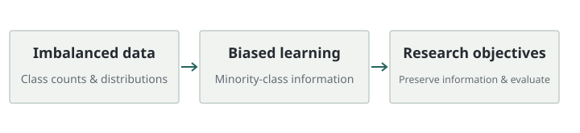

불균형 데이터의 편향 학습 방지
Strategies to Prevent Biased Learning for Imbalanced Data
소수 클래스가 충분히 학습되지 않는 불균형 데이터 문제를 다룬 2025년 박사학위 연구입니다.
- 문제: 다수 클래스 중심의 학습과 소수 클래스 정보 손실
- 관련 공개 연구: 클래스별 노이즈 필터링·오버샘플링


연구 문제
클래스별 데이터 수와 분포가 다를 때 다수 클래스 중심으로 학습되는 문제를 다룹니다. 전체 성능뿐 아니라 소수 클래스의 정보가 학습 과정에서 어떻게 보존되는지가 연구의 관심입니다.
접근 방법
학위논문 원문을 이 환경에서 열지 못해 장별 방법과 수치를 추정하지 않았습니다. 공개 확인이 가능한 저자의 관련 연구는 노이즈 필터링과 분류 복잡도 기반 오버샘플링이며, 각각의 상세에서 방법과 코드를 확인할 수 있습니다.
기여
학위논문 저자로 불균형 데이터의 편향 방지 전략을 정리했습니다. 아래 개념도는 연구 문제의 범위를 설명하며 논문의 전체 구성이나 실험 결과를 재현하지 않습니다.
논문 및 코드
링크기존 자료에 코드 링크가 기재되어 있지 않습니다.